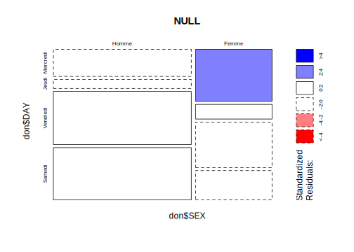
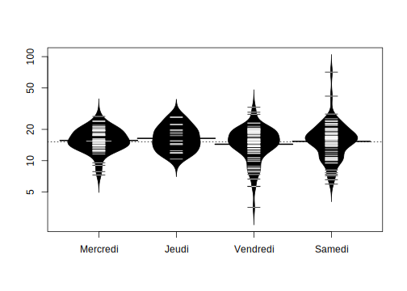
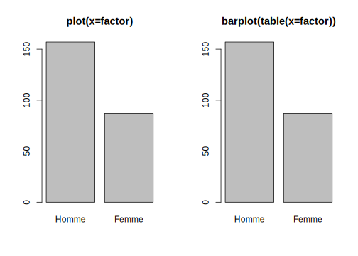
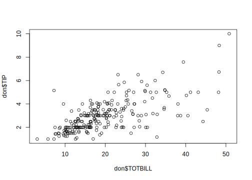
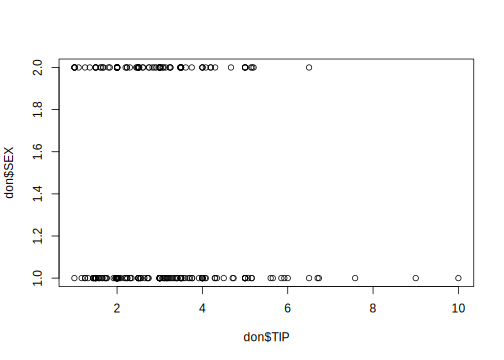

Partie 9 Graphiques avec ggplot2

- Mise en place : Télécharger le dossier exo8 et décompressez le sur votre ordinateur. Puis ouvrez le projet R
exo8.Rprojdans Rstudio.
9.1 Introduction
9.1.1 ggplot2 et tydiverse
- ggplot2 est un package de visualisation graphique qui s’incrit dans l’écosystème plus général du tydiverse mis au point par Hadley Wickham, l’un des grands prêtres de R, responsable scientifique en chef de Rstudio.
ggplot2 est considéré actuellement comme la référence mondiale en matière de visualisation de données statistiques sous R en raison de sa puissance et de sa polyvalence.
mais son usage avancé n’est pas très facile même si les principes de base sont (relativement) simples.
ggplot2 peut fonctionner sans tidyverse mais il est probablement plus efficace lorsque l’on l’utilise à l’intérieur de son écosystème. En d’autres termes, l’apprentissage de ggplot2 est souvent couplé avec celui de tidyverse. Voir par exemple l’excellent cours de J. Barnier.
9.1.2 ggplot2 cheatsheet
- Il est recommandé d’imprimer et d’avoir toujours avec soi la ggplot2 cheatsheet qui est disponible en français.
9.2 préparation des données
9.2.1 Chargement du fichier
On charge un fichier statistique appelé tips.csv où les séparateurs sont des points-virgules et les décimales des points.
don<-read.table(file = "resources/data/tips/tips.csv",
sep = ";",
header = T)
head(don)
#> IDEN TOTBILL TIP SEX SMOKER DAY TIME SIZE
#> 1 R001 16.99 1.01 1 0 6 1 2
#> 2 R002 10.34 1.66 0 0 6 1 3
#> 3 R003 21.01 3.50 0 0 6 1 3
#> 4 R004 23.68 3.31 0 0 6 1 2
#> 5 R005 24.59 3.61 1 0 6 1 4
#> 6 R006 25.29 4.71 0 0 6 1 49.2.2 Contenu du fichier
Ce dossier contient les pourboires (tips en anglais, d’où le nom du fichier) d’un serveur dans un restaurant américain aux débuts des années 1990. Le restaurant était dans un centre commercial. Il y avait une zone fumeurs et une zone non fumeurs.Les données indiquent le prix du repas, le pourboire, le sexe de la personne qui a payé et donné le pourboire, si c’était dans la zone fumeurs ou non, le jour où le repas a été pris, si c’était en journée ou en soirée et enfin, le nombre de convives.
Sources : Ces données sont disponibles dans le package R nommé rggobi et sont décrites dans l’ouvrage de Cook et Swayne intitulé Interactive and Dynamic Graphics for Data Analysis. Elles font partie des données d’exemple du livre de Bryant et Smith dont la première édition est parue en 1995 dont le titre est Practical Data Analysis: Case Studies in Business Statistics.
9.2.3 Dictionaire des variables
- IDEN : identifiant du repas
- TOTBILL : prix du repas (en dollars des années 1990)
- TIP : pourboire (en dollars des années 1990)
- SEX : sexe de la personne qui a payé (0 = Homme, 1 = Femme)
- SMOKER : la personne qui a payé est non-fumeur (O) ou fumeur (1)
- DAY : jour de la semaine (1 = dimanche, 2 = lundi, 3 = mardi, …)
- TIME : repas pris en journée (0) ou le soir (1)
- SIZE : nombre de convives
9.2.4 Recodage des variables
Le type de plusieurs variables est incorrect. On transforme les codes numériques en facteur et on recode les niveaux en français :
don$IDEN<-as.character(don$IDEN)
don$SEX<-as.factor(don$SEX)
levels(don$SEX)<-c("Homme","Femme")
don$SMOKER<-as.factor(don$SMOKER)
levels(don$SMOKER)<-c("Non fumeur", "Fumeur")
don$DAY<-as.factor(don$DAY)
levels(don$DAY)<-c("Mercredi","Jeudi","Vendredi","Samedi")
don$TIME<-as.factor(don$TIME)
levels(don$TIME)<-c("Journée","Soirée")
don$PCT<-100*don$TIP/don$TOTBILL9.2.5 Résumé de l’ensemble du tableau
summary(don)
#> IDEN TOTBILL TIP SEX
#> Length:244 Min. : 3.07 Min. : 1.000 Homme:157
#> Class :character 1st Qu.:13.35 1st Qu.: 2.000 Femme: 87
#> Mode :character Median :17.80 Median : 2.900
#> Mean :19.79 Mean : 2.998
#> 3rd Qu.:24.13 3rd Qu.: 3.562
#> Max. :50.81 Max. :10.000
#> SMOKER DAY TIME SIZE PCT
#> Non fumeur:151 Mercredi:62 Journée: 68 Min. :1.00 Min. : 3.564
#> Fumeur : 93 Jeudi :19 Soirée :176 1st Qu.:2.00 1st Qu.:12.913
#> Vendredi:87 Median :2.00 Median :15.477
#> Samedi :76 Mean :2.57 Mean :16.080
#> 3rd Qu.:3.00 3rd Qu.:19.148
#> Max. :6.00 Max. :71.0349.3 Principes généraux
On commence par charger le package ggplot2 qui est une partie de l’univers tidyverse mais que l’on peut utiliser indépendamment du reste de l’empire d’Hadley Wickham…
9.3.1 Les différentes étapes
- la commande ggplot(data) initie la création du graphique.
- la commande aes() qui est l’abrévation de aesthetics définit les paramètres généraux de l’ensemble du graphique et comporte en général
- x = variable liée à l’axe horizontal
- y= variable liée à l’axe vertical
- colour= : variable définissant des groupes / couleur
- shape= : variable définissant des groupes / forme
- la commande geom_xxx crée un graphique de type xxx
- les commandes additionnelles scale_xxx précisent les axes
- la commande additionelle facet_xxx partitionne la figure en plusieurs
- la commande theme_xxx retouche l’ensemble des paramètres de couleur, police, épaisseur
N.B. Toutes les étapes ci-dessus ne sont pas obligatoires.
9.3.2 La figure à réaliser
Comment réaliser la figure ci-dessous ?
#> `geom_smooth()` using formula = 'y ~ x'
9.3.3 La construction pas à pas
On définit le tableau de données avec ggplot() et les variables principales avec aes()

On ajoute le type principal du graphique avec la commande geom_point()

On retouche les axes horizontaux et verticaux en les passant en logarithme et en leur donnant un titre.
ggplot(don) +
aes(x = TOTBILL) +
aes(y = TIP) +
geom_point() +
scale_x_log10(name="Prix du repas en $")+
scale_y_log10(name="Montant du pourboire en $")
On segmente le graphique en facettes selon une ou plusieurs variables avec facet_wrap(). Du coup, on retire ces variables de l’esthétique générale :
ggplot(don) +
aes(x = TOTBILL) +
aes(y = TIP) +
geom_point() +
scale_x_log10(name="Prix du repas en $")+
scale_y_log10(name="Montant du pourboire en $")+
facet_wrap(vars(SEX,SMOKER))
On ajoute dans chaque facette une droite de tendance et son intervalle de confiance avec geom_smooth(). On précise method=“lm” pour avoir une droite et non pas une courbe
ggplot(don) +
aes(x = TOTBILL) +
aes(y = TIP) +
geom_point() +
scale_x_log10(name="Prix du repas en $")+
scale_y_log10(name="Montant du pourboire en $")+
facet_wrap(vars(SEX,SMOKER))+
geom_smooth(method="lm")
#> `geom_smooth()` using formula = 'y ~ x'
Onajoute un titre principal avec ggtitle() et on retouche l’ensemble de l’apparence avec theme_light().
ggplot(don) +
aes(x = TOTBILL) +
aes(y = TIP) +
geom_point() +
scale_x_log10(name="Prix du repas en $")+
scale_y_log10(name="Montant du pourboire en $")+
facet_wrap(vars(SEX,SMOKER))+
geom_smooth(method="lm") +
ggtitle(label = "Relation entre prix du repas et pourboire / sexe et tabagisme",
subtitle = "Source : Briant & Smith 1995 ") +
theme_light()
#> `geom_smooth()` using formula = 'y ~ x'
9.3.4 Comparaison avec R-Base
La principale différence réside dans la construction séquentielle de la figure avec l’opérateur +. A tout moment on peut sauvegarder la figure au cours d’une des étapes décrites dans l’exemple. On parle de pipeline pour ce type de programme que l’on retrouve dans la manipulation de données avec tidyverse et dplyr.
La seconde différence réside dans la production rapide d’une figure de qualité graphique acceptable sans avoir besoin de spécifier les paramètres par() de R-Base.
Au total, ggplot2 s’impose actuellement comme un standard mondial autour duquel se greffent d’autres applications. Par exemple, on peut rendre interactif un graphique ggplot() en le couplant avec plotly().
Mais … ggplot2 est beaucoup moins simple qu’il n’y paraît de prime abord. Et on peut facilement s’arracher les cheveux sur certaines commandes !
9.3.5 Attention ! Paramètres aes() locaux et globaux
Une des plus grandes difficultés que l’on rencontre dans ggplot() est la manipulation du paramètre aes() qui peut renvoyer :
- soit à des paramètres globaux s’ils apparaissent dans le ggplot initial ou dans des lignes de codes isolées
- soit à des paramètres locaux, s’ils apparaissent à l’intérieur d’une fonction geom().
Deux exemples rapides pour bien comprendre
- SEX est un paramètre global : dans ce cas il s’applique à toutes les commandes qui suivent. Il y aura donc deux droites de régression générées par geom_smooth
ggplot(don, aes(x = TOTBILL, y = TIP, color = SEX)) +
geom_point() +
geom_smooth(method="lm")
#> `geom_smooth()` using formula = 'y ~ x'
- SEX est un paramètre local de geom_point() : dans ce cas il n’aura pas d’effet sur geom_smooth() qui va générer une seule droite de régression.
ggplot(don, aes(x = TOTBILL, y = TIP)) +
geom_point(aes(color=SEX)) +
geom_smooth(method="lm")
#> `geom_smooth()` using formula = 'y ~ x'

9.5 X quantitative continue
9.5.1 hist (R-base)
don2<-don[don$PCT<30,]
hist(don2$PCT,breaks = 15,
col = "lightyellow",
border = "blue",
xlab="Pourboire (%)",
ylab = "Nombre de clients",
main = "Les clients sont-ils généreux ?")
9.5.2 geom_histogram (ggplot2)
# On démarre par une ligne de tidyverse ...
don %>% filter(PCT<30) %>%
# ... en on embraye sur ggplot2
ggplot() +
aes(x =PCT) +
# Appel de la fonction principale
geom_histogram( bins = 15,
fill="lightyellow",
col="blue"
) +
# Retouche de l'échelle
scale_x_continuous( name = "Pourboires en %") +
scale_y_continuous(name = "Nombre de clients")+
# Ajout du titre
ggtitle("Les clients sont-ils généreux ?") 
9.6 X et Y quantitatives continues
9.6.1 plot (R-base)
don2<-don[don$PCT<30,]
plot(x = don2$TOTBILL,
y = don2$PCT,
cex=0,
xlab="Prix du repas",
ylab="Pourboire (%)",
main= "Plus c'est cher moins on est généreux !")
points(x=don2$TOTBILL,
y=don2$PCT,
col=don2$SEX,
cex=sqrt(don2$SIZE),
pch=19)
abline(lm(don2$PCT~don2$TOTBILL),
col="blue",
lwd=3)
9.6.2 geom_point (ggplot2)
# On filtre avec tidyverse ...
don %>% filter(PCT<30) %>%
# On définit les paramètres globaux
ggplot(aes(x =TOTBILL, y=PCT)) +
# On trace les points avec
# des paramètres locaux
geom_point(aes(color=SEX,
size = SIZE)) +
# On ajoute la droite de régression
geom_smooth(method = "lm") +
# On ajoute les titres
scale_x_continuous(name="Prix du repas") +
scale_y_continuous(name="Pourboire en %") +
ggtitle("Plus c'est cher moins on est généreux !")
#> `geom_smooth()` using formula = 'y ~ x'
9.7 X quantitative continue et Y discrète
9.7.1 6.1 boxplot (R-base)
don2<-don[(don$PCT < 30),]
don2$SIZE<-as.factor(don2$SIZE)
#levels(don2$SIZE)<-c("1 ou 2", "1 ou 2", "3 ou 4", "3 ou 4", "5 ou 6", "5 ou 6")
boxplot(don2$PCT~don2$SIZE,
col=rainbow(n=12, alpha=0.5),
xlab="Nombre de personnes",
ylab="Pourboire (%)",
main= "Plus on est de fous, moins on est généreux !",)9.7.2 geom_boxplot (ggplot2)
# On filtre le tableau et on change SIZE en factor
don %>% filter(PCT < 30) %>%
mutate(SIZE = as.factor(SIZE)) %>%
# On définit les paramètres principaux
ggplot(aes(x= SIZE,y = PCT)) +
# On ajoute la boxplot
geom_boxplot(aes(fill= SIZE)) +
# On ajoute les titres
scale_x_discrete(name="Nombre de personnes") +
scale_y_continuous(name="Pourboire en %") +
ggtitle("Plus on est de fous, moins on est généreux !")
9.7.3 beanplot (R-base + package beanplot)
par(bg="black",fg="white",col.lab ="white", col.axis ="white",col.main="white" )
don2<-don[(don$PCT < 30),]
don2$SIZE<-as.factor(don2$SIZE)
#levels(don2$SIZE)<-c("1 ou 2", "1 ou 2", "3 ou 4", "3 ou 4", "5 ou 6", "5 ou 6")
library(beanplot)
beanplot(don2$PCT~don2$SIZE,
col=c("lightyellow","red"),
xlab="Nombre de personnes",
ylab="Pourboire (%)",
main= "Plus on est de fous, moins on est généreux !")
9.7.4 geom_violin (ggplot2)
# On filtre le tableau et on change SIZE en factor
don %>% filter(PCT < 30) %>%
mutate(SIZE = as.factor(SIZE)) %>%
# On définit les paramètres principaux
ggplot(aes(x= SIZE,y = PCT)) +
# On ajoute la géométrie
geom_violin(aes(fill= SIZE)) +
# On ajoute les titres
scale_x_discrete(name="Nombre de personnes") +
scale_y_continuous(name="Pourboire en %") +
ggtitle("Plus on est de fous, moins on est généreux !")+
# On passe en thème "dark"
theme_dark()
9.8 Deux variables X et Y discrètes
9.8.1 mosaicplot (R-base)
don$SIZE<-as.factor(don$SIZE)
mosaicplot(don$SEX~don$SIZE,
col=terrain.colors(n=7, alpha=0.5),
xlab="Genre de la personne qui a payé",
ylab="Nombre de convives",
main= "Plus il y a de monde, plus ce sont les hommes qui payent")
9.8.2 geom_bar (ggplot2)
Solution simple mais pas terrible !
# On filtre le tableau et on change SIZE en factor
don %>% mutate(SIZE = as.factor(SIZE)) %>%
# On définit les paramètres principaux
ggplot(aes(x= SEX, fill = SIZE)) +
# On ajoute geom_bar
geom_bar() +
# On ajoute les titres
scale_x_discrete(name="Genre de la personne qui a payé") +
ggtitle("Plus il y a de monde, plus ce sont les hommes qui payent")
solution juste … mais très complexe
# On crée un tableau de contingence
# avec pourcentages en colonne avec
# du code tidyverse
don %>% mutate(SIZE = as.factor(SIZE)) %>%
group_by(SEX, SIZE) %>%
summarise(count = n()) %>%
mutate(cut.count = sum(count),
prop = count/sum(count)) %>%
ungroup() %>%
# On définit les paramètres principaux
ggplot(aes(x = SEX,
y = prop,
width = cut.count,
fill = SIZE)) +
# On lance le geom_bar avec plein d'options
geom_bar(stat = "identity",
position = "fill",
colour = "black") +
facet_grid(~SEX,
scales = "free_x",
space = "free_x") +
scale_fill_brewer(palette = "RdYlGn",
direction=-1) +
theme_void() +
# On ajoute les titres
scale_x_discrete(name="Genre de la personne qui a payé") +
ggtitle("Plus il y a de monde, plus ce sont les hommes qui payent")
#> `summarise()` has grouped output by 'SEX'. You can
#> override using the `.groups` argument.
9.9 Conclusion
9.9.1 R-base
- simple d’utilisation
- peut être amélioré par des packages spécialisés
- permet de créer ses propres fonctions
- n’impose pas d’apprendre tidyverse
9.9.2 ggplot2
- standard mondial du graphisme … actuellement
- compatible avec la religion du tidyverse
- rédaction séquentielle très efficace
- mais apprentissage difficile (plusieurs semaines …)
9.9.3 Le meilleur des deux mondes ?
- ne pas hésiter à combiner les deux
- exportation facile des résultats dans les deux cas (pdf, jpeg, png, …)
9.9.4 plotly, un challenger sérieux de ggplot pour le web
- plotly crée des graphiques interactifs au format .html
- plotly peut convertir des documents ggplot
- plotly a une syntaxe proche de ggplot mais avec des fonctionnalités en plus
- plotly est multilangage (R, Python, …)
# création et sockage de la figure ggplot
toto <- ggplot(don, aes(x = TOTBILL, y = TIP) )+
geom_point (aes(colour = SEX, shape = SMOKER)) +
scale_x_log10(name="Prix du repas en $") +
scale_y_log10(name="Montant du pourboire en $") +
geom_smooth(method="lm")
# conversion en plotly
library(plotly)
titi <-ggplotly(toto)
#> `geom_smooth()` using formula = 'y ~ x'
# affichage
titi